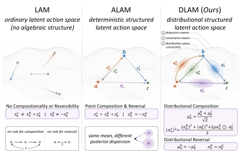
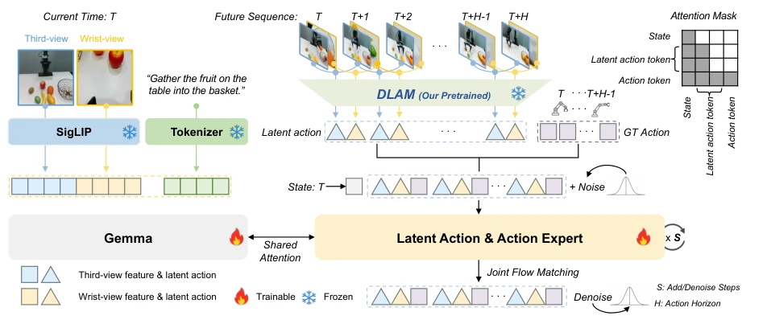
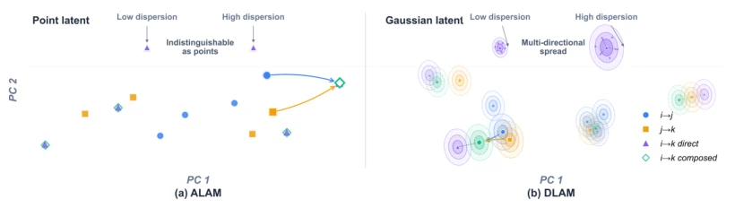
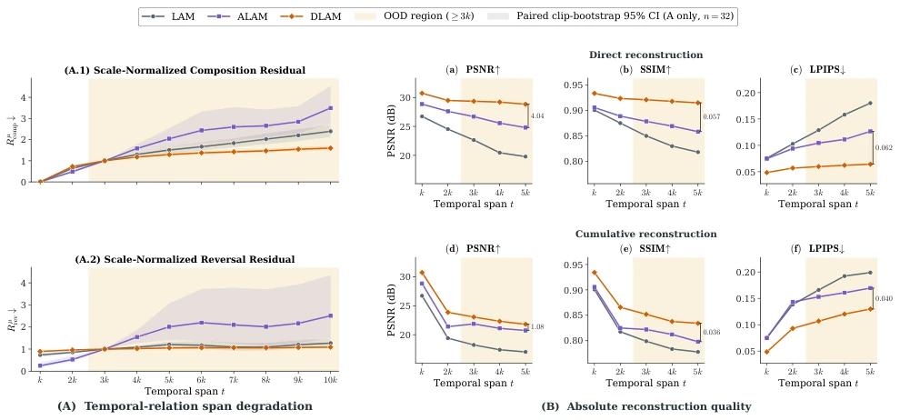
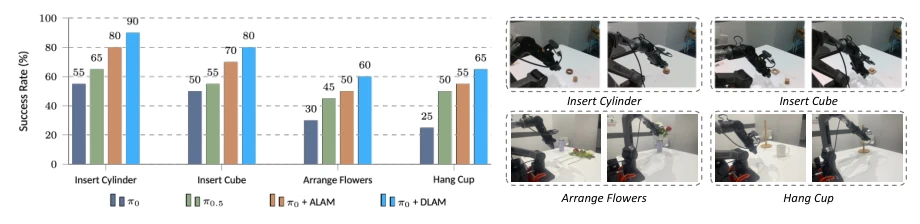
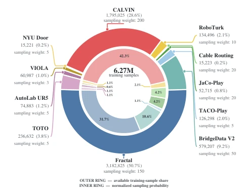

This paper attempts to use Distributional Latent Actions to solve the error accumulation problem of traditional Latent Action Models (LAM) during recursive composition. Although extending deterministic point estimates to diagonal Gaussian distributions sounds appealing, essentially the authors do not truly utilize variance for uncertainty calibration, but rather use it as an auxiliary training signal. The paper's performance on MetaWorld and LIBERO is indeed impressive, proving the effectiveness of temporal constraints. However, its constraints only act on equidistant triplets, and long-range generalization ability remains doubtful. For VLA models, this is a robust "middleware" upgrade that improves policy performance without modifying the backbone network, but do not expect it to solve all long-range planning problems, after all variance is just a "sparring partner".
研究动机Motivation
Vision-Language-Action (VLA) 模型依赖大量动作标注数据，成本高昂。相比之下，无动作视频提供了丰富的物理变化观察，是理想的补充源。然而，仅靠重建训练的隐式动作（LAM）可能编码对控制无关的视觉变化，如相机运动或背景动态，导致与机器人动作联合生成效果不佳（Zhang et al. 2025a）。现有的结构化方法（如 ALAM）虽然引入了组合与反转约束，但仍将每个转换表示为确定性点。这意味着局部推断转换中的残差误差在递归组合下会传播并累积。DLAM 旨在通过将对角高斯分布应用于转换表示，使时序约束能同时监督均值和维度方差，从而解决误差累积问题，提升下游控制性能。
Vision-Language-Action (VLA) models rely on large amounts of action-annotated data, which is costly. In contrast, actionless videos provide rich observations of physical changes and are an ideal supplementary source. However, implicit actions (LAM) trained solely on reconstruction may encode visual changes irrelevant to control, such as camera motion or background dynamics, leading to poor joint generation with robot actions (Zhang et al. 2025a). Existing structured methods (such as ALAM) introduce composition and inversion constraints, but still represent each transition as a deterministic point. This means residual errors in locally inferred transitions will propagate and accumulate under recursive composition. DLAM aims to apply diagonal Gaussian distributions to transition representations, enabling temporal constraints to supervise both means and dimensional variances simultaneously, thereby solving the error accumulation problem and improving downstream control performance.

Figure 1: From point-valued to distribution-valued transi- tions. Reconstruction-only LAMs do not explicitly organize temporal relations. ALAM adds composition and reversal constraints to deterministic transition points. DLAM applies these relations to Gaussian posteriors, constraining both the transition center and its dimension-wise dispersion.
The overall architecture is divided into two stages: actionless video pre-training and downstream policy transfer. During pre-training, the encoder receives source and target frames, predicting diagonal Gaussian distribution parameters (mean and variance) for K tokens. The decoder uses only the mean sequence and source frame to reconstruct the target frame, ensuring the mean is grounded in visual changes. The key innovation lies in applying normalized composition and inversion constraints to equidistant triplets: The composition operation not only matches means but also handles dependencies between variances of adjacent transitions through shared correlation coefficients; The inversion operation negates the mean and retains the variance. These constraints provide additional training signals. During downstream transfer, the pre-trained encoder is frozen, and mean sequences from consecutive frame pairs are extracted. These mean sequences are projected and interleaved with robot action tokens as auxiliary generation targets for the Flow Matching policy. The policy jointly generates action flows and latent action flows, requiring no new VLA backbone or latent-to-action decoder, utilizing only the mean as an auxiliary target.

Figure 2: Downstream transfer of DLAM. The frozen encoder extracts distributional transitions from consecutive demon- stration frames. Their posterior means are projected and interleaved with robot-action tokens. Conditioned on current visual observations and language, the policy jointly generates both streams with flow matching. Future frames are used only to construct training targets, and only robot actions are executed.

Figure 3: Deterministic and diagonal-Gaussian transitions. A PCA projection of held-out transitions encoded by trained ALAM and DLAM checkpoints. ALAM returns one point per transition, whereas DLAM predicts a mean together with an element-wise standard deviation. This visualization shows the difference in representation; it is not an uncertainty-calibration or cross-model geometric comparison.
The model is pre-trained on 11 actionless video datasets (such as Open X-Embodiment, CALVIN). Evaluation covers MetaWorld MT50, LIBERO, and four real-world manipulation tasks. Compared to reconstruction-based LAM and deterministic structured baselines (ALAM), DLAM significantly improves frame reconstruction quality retention, with direct and cumulative reconstruction PSNR increasing by 3.45dB and 1.17dB respectively. In policy transfer, DLAM achieves an average success rate of 87.6% on MetaWorld, 99.0% on LIBERO, and 73.8% on average for real tasks. Ablation studies show that normalized mean constraints contribute the majority of reconstruction gains, while learned variance and correlation-aware composition provide complementary improvements for downstream control. Temporal diagnostics show that DLAM has lower composition and inversion residuals at long spans, indicating stronger temporal consistency.

Figure 5: Held-out transition diagnostics and reconstruction. A. Scale-normalized mean composition and reversal residuals over increasing temporal spans. The shaded region marks spans beyond the directly supervised k+k →2k composition relation. B. Absolute reconstruction quality across endpoint spans for direct and cumulative decoding.

Figure 6: Real-world manipulation. Task-level success rates on a Piper 6-DoF arm for insert cylinder, insert cube, arrange flowers, and hang cup. We compare action-only and latent-action-augmented policies under the same training and evaluation.
其他图片Other Figures

Figure 4: Action-free pretraining mixture. The outer ring shows the available training-sample share, whereas the inner ring shows the normalized sampling probability over the 11 video sources.